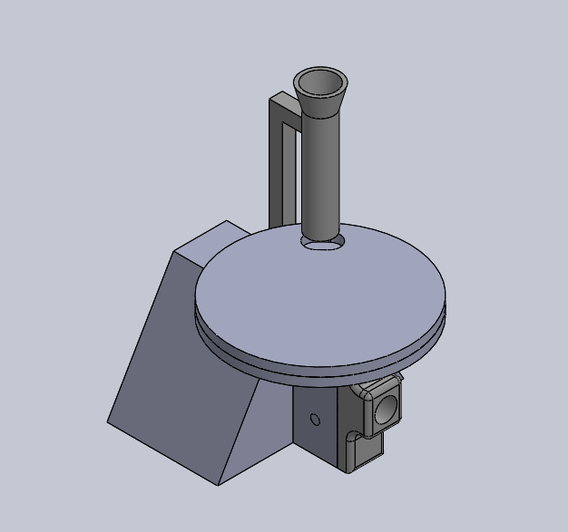

協同產品設計實習
stege2-bg7
小組成員40823211 .40823216.40823218.40823238
主題:發球機

動機:上體育課的時候幫同學餵球覺得效率很差，因此想設計一款簡單輕巧的發球機
構造原理:運用圓盤控制放球的速度，並用兩個旋轉的摩擦輪發射球
組合圖

結構零件圖
底座和軌道
結構零件圖

圓筒
w7_使用COPPELIASIM模擬
問題:因要將球射出，加大馬達扭力後，造成圓筒晃動，所以要改變機構。
結構零件圖

第一版主體
結構零件圖

圓盤:圓盤轉動，開孔使球能正確落下
結構零件圖
滾輪x2:將兩個滾輪快速轉動，使球發射出去
結構零件圖
8mm銷x2:用來定位主體跟滾輪的位置
第二版_使用COPPELIASIM模擬
問題:圓盤部分會碰撞使球彈開。
第二版組合圖
結構零件圖
第二版主體:
結構零件圖
漏斗雛形:之後會挖中空，讓球放置其中
第二版_使用COPPELIASIM模擬
問題:圓盤的部分還有一些問題，開碰撞會彈走。
最終組合圖

結構零件圖

籃子:更改籃子還是無法解決卡球的問題。
結構零件圖
管子:將籃子改為管子，解決卡球的問題
結構零件圖

噴嘴:新增噴嘴，為了使球能以最正確的方向噴出。
結構零件圖
主體+噴嘴組合圖
第三版_使用COPPELIASIM模擬
心得_40823211陳昱
這次做的發球機改版了許多次，因為在過程中有許多發球不順的可能，一次一次的改版也一次一次的解決各種問題。過程中，組員一同努力，一同加油打氣，在大家的同心協力下，發球機終於完成了。期待之後的8人分組，能再次享受在完成作品後的成就感
心得_40823216陳弘勛
在第二次分組的這五個星期中，我能更熟悉快速地去做協同的動作。在做的時候也會遇到各種問題，但是經過組員的協商，我們也都克服了過去，能做完這件作品，是非常開心的，也離不開我的組員的幫助，所以非常的感謝他們。
心得_40823218陳致文
這次在模擬的部分遇到了不少問題，好幾次球不是卡住就是亂彈，因此經過反覆修改圖檔解決問題，但還是有些許問題尚未解決，經過這次專題以後，也讓我知道CoppeliaSim可能不太適合用來模擬發球機這類的題目
心得_40823238吳容輝
這次的分組由於是四個人，因此組員們推送的時間上不好配合，於是用了DISCORD這個軟體，並將github的倉儲用webhook做連結讓大家知道誰有做更新，方便管理；這次主要負責修改零件，在修改時因為組員使用不同軟體，所以沒辦法做完全修改，必須分開來，再將檔案集中到一個人身上做組合，有一點沒效率，還可以再加強。